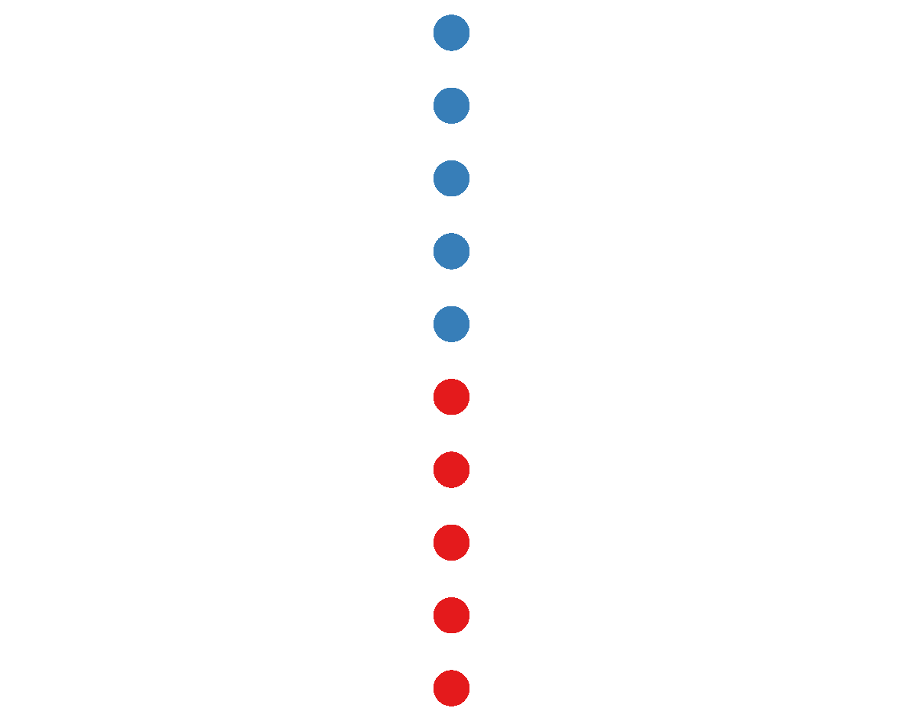
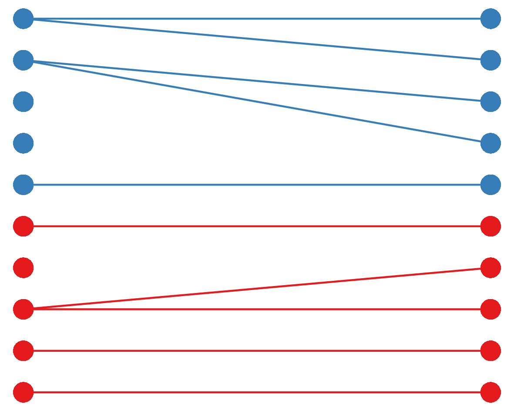
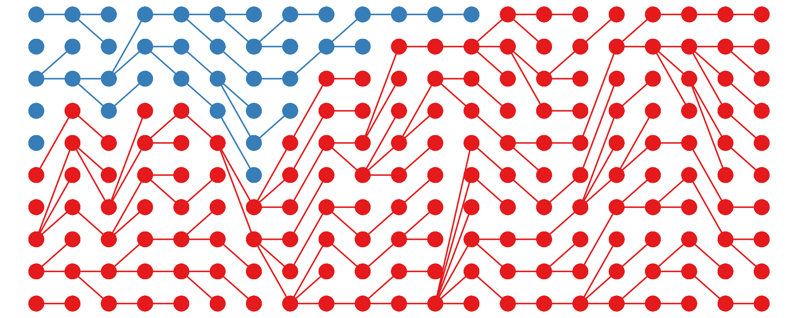
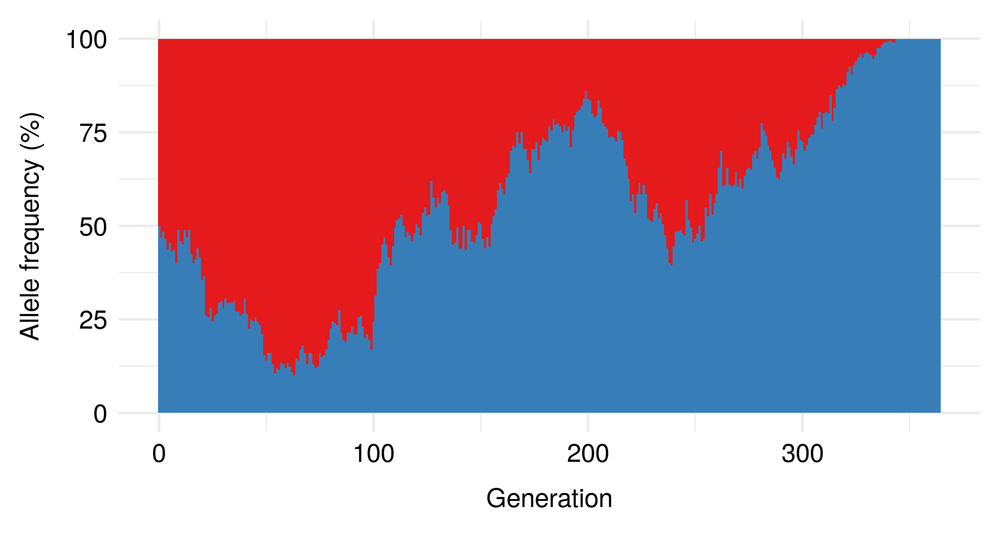
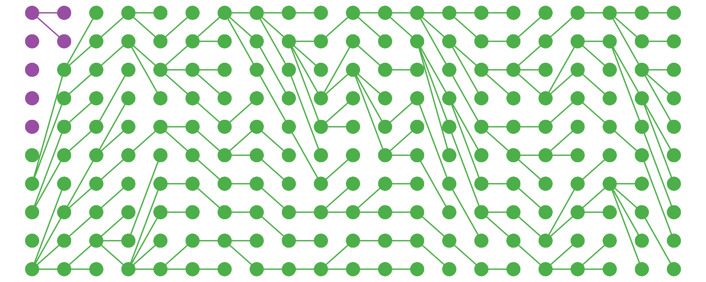
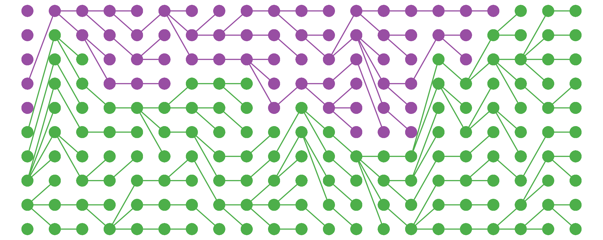
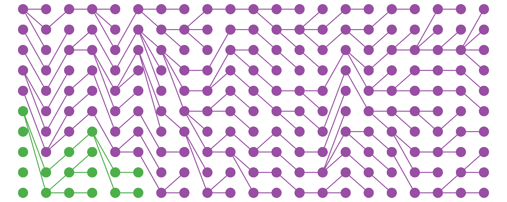
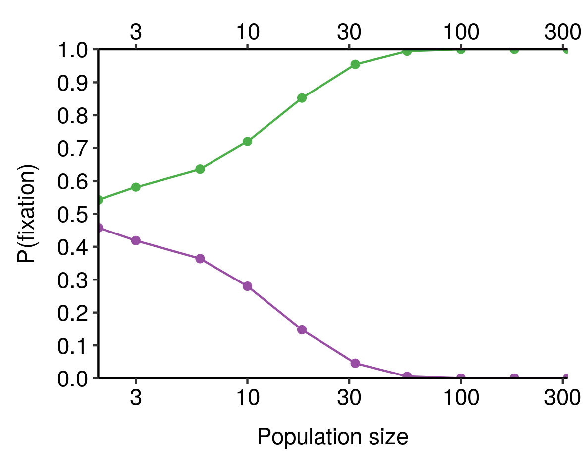
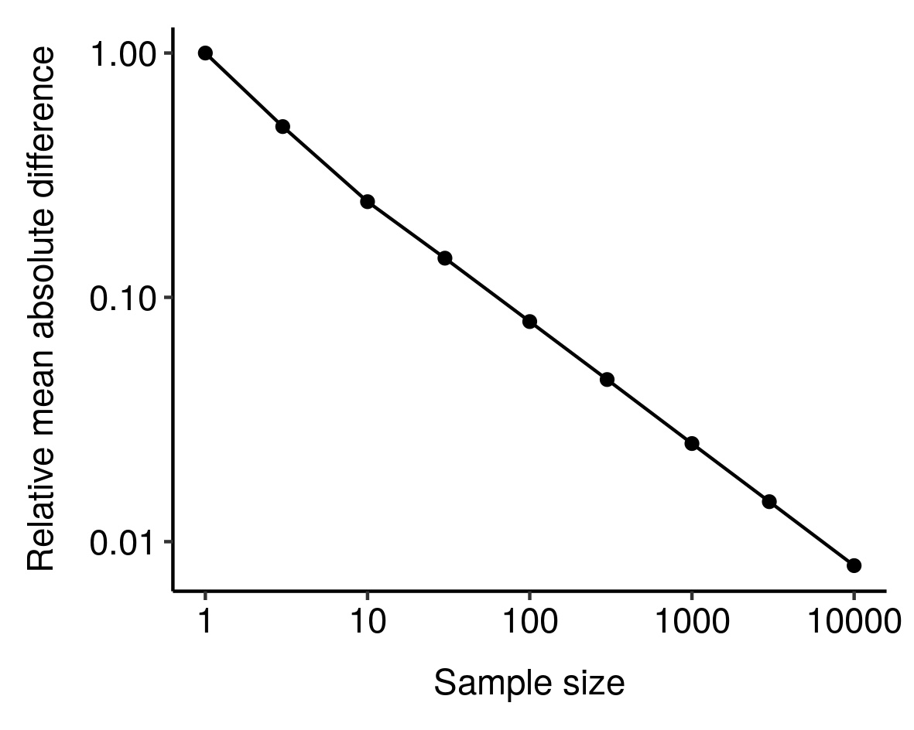
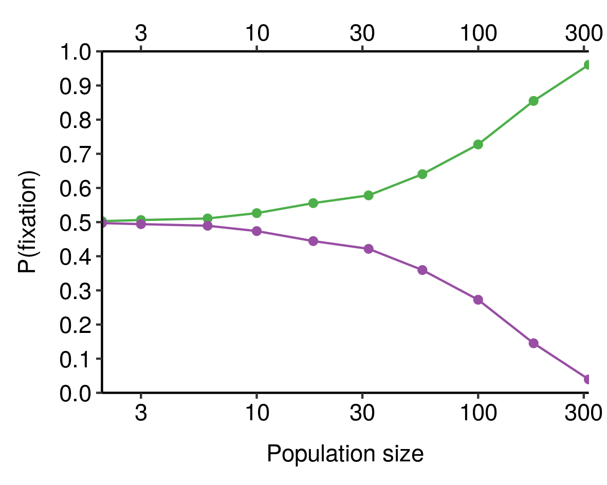

A common mistake people make about evolution is to think it’s all about natural selection and adaptation. In fact, random non-adaptive changes often dominate the evolutionary process.
Today I’m going to lay out a useful framework that I hope makes this fact more intuitive, which might in turn help non-experts build better intuitive models of evolutionary processes. This will come in handy when I try to explain non-adaptive theories of ageing later on.
Sampling error and genetic drift
We can think of evolution as sampling error: deviation in the genetic composition of the offspring in a population relative to their parents. To illustrate this, let’s imagine a simple, asexual population, evenly divided between two gene variants (alleles) which produce no difference in fitness1:

These individuals will reproduce, giving rise to the next generation. Since all the individuals are genetically identical and have the same chance of reproducing, we can think of these offspring being randomly sampled, with replacement, from the previous generation:

Since there is a great deal of randomness involved in who reproduces successfully and whose offspring survive, not all individuals will produce the same number of offspring in the next generation, even though they all had the same probability of reproducing to begin with. As a result, even in the absence of selection effects, the allele distribution of the new generation is likely to differ from that of the previous generation; this random, unbiased change in allele distribution is known as genetic drift.
As a result of genetic drift, the allele distribution will fluctuate up and down stochastically; sooner or later, one or the other will be eliminated from the population, resulting in fixation:

The time to fixation depends on the population size2 and some other population parameters; here’s an example plot for a population with a carrying capacity of 200 instead of 10:

Fairly dramatic genetic changes, then, can accumulate in a population based purely on genetic drift; there’s not necessarily any need to invoke selection to explain why genetic differences between populations accumulate over time. That said, what happens when we add selection into the mix?
Natural selection is sampling bias
Suppose that one of the starting alleles in the population is less fit than the other: individuals with that allele are less likely to produce reproductively-successful offspring. What happens now?
If one allele is much less fit than the other, the individuals bearing it will probably die without issue, producing a very boring plot:

So far, so trivial. The interesting cases occur when the fitness of one genotype is close to (either a bit higher or a bit lower than) the old one. In this case, thanks to genetic drift, the less-fit allele (here in purple) can persist in the population for a surprisingly long time…

…or even fix!

Overall, under these conditions (carrying capacity = 10, relative fitness ~ 0.9) the less-fit allele will reach fixation about a quarter of the time; more than enough for 100% the population to be bearing many deleterious alleles.
These results are a pretty trivial application of statistics, but they have very important implications for how we should view evolution. Thanks to genetic drift, beneficial mutations will often die out and deleterious ones reach fixation. How often this occurs depends on various factors, the most obvious of which is the magnitude of the mutation’s effect on fitness — the more dramatic the effect, the greater selection’s ability to overcome drift and eliminate the less-fit allele.
However, another crucial variable, underappreciated outside evolutionary biology, is population size.
Evolution and the law of large numbers
According to the law of large numbers, the average of a sample converges in probability towards its expected value as sample size increases: the larger the sample, the smaller the expected relative mean absolute difference between the sample mean and the expected value3. If you flip a coin ten times, the chance of deviating from the expected value (five heads) by at least 20% is more than 75%, whereas it’s only 5% if you flip 100 times and virtually zero if you flip 1000 times. The larger the sample, the more likely you are to see roughly what you expect.
In our framework of evolution as sampling error, natural selection determines the expected value: the number of offspring of each genotype we expect to see in the next generation, given the distribution in the current generation. But the smaller the population, the more likely it is to deviate substantially from this expectation – that is, for random genetic drift to overwhelm the bias imposed by natural selection.
If you combine this sample-size-dependent variability with the absorbing nature of fixation and elimination (that is, once an allele has been eliminated, it isn’t coming back), you obtain the result that the larger the population, the more likely it is that the fitter allele is actually the one that gets fixed, all else equal. We can see this in our toy model from earlier, where the green allele is 10% fitter than the purple allele and both start with 50% prevalence in the population:

When population size is very small, the chance that the fitter (green) allele is the one that eventually fixes is close to 50%; as population size increases, this probability increases, until for sufficiently-large populations it is virtually certain. Smaller differences in fitness would require larger population sizes to consistently fix the fitter allele4.
Population size, then, is a crucial factor affecting the optimisation power of evolution: the larger the population size, the greater the capacity of natural selection to select for beneficial mutations and eliminate deleterious ones. This is why bottlenecks and founder effects are so important in evolution: by reducing the size of the population, they both increase the relative prevalence of rare mutations and decrease the relative strength of natural selection, resulting in very powerful drift. The results of this can be quite striking: on the tiny Micronesian island of Pingelap, for example, almost 10% of the population are completely colourblind, a condition that is extremely rare elsewhere5. This is believed to be the result of a typhoon in 1775 that left only 20 survivors, one of whom was a carrier of the condition6.
Implications
What can we infer from all this? Firstly, when thinking about evolutionary processes it’s vital not to neglect genetic drift. Just because something spread throughout a population and reached fixation does not mean it is adaptive. Secondly, this is especially true when populations are small, and we should always pay careful attention to population size when thinking about how a population might evolve. In general, we should expect larger populations7 to be fitter than smaller ones, since (among other things) natural selection will be more effective at weeding out deleterious alleles and propagating beneficial ones.
Finally, it has not escaped my notice that this framework has obvious implications for thinking about analogous evolutionary processes that might occur outside of biology. More on this anon.
-
I’m also assuming non-overlapping generations and a constant carrying capacity; relaxing these assumptions makes the maths more complicated but shouldn’t alter the basic conclusion. Similarly, while new genetic variants are capable of spreading much more quickly through sexual populations, the same basic phenomena still apply. ↩
-
Actually, the time to fixation (and many other aspects of the population’s behaviour) depend on its effective population size, which depends not only on its actual population size but also on various demographic and genetic factors. This is an absolutely crucial distinction that I am eliding here for the sake of brevity (in my defence, population geneticists seem to also do the same thing when speaking casually). Effective population sizes are often much smaller than actual (“census”) sizes; for example, the usual estimate that gets bandied about for global human effective population size is roughly 10,000. ↩
-
In fact, the RMD looks like it might vary as a power law of sample size:  I noticed this from simulations and haven’t bothered to tease out the underlying mathematics here, but still, kinda cool. ↩
-
See e.g. this plot for a 1% difference in fitness:  ↩
-
According to Wikipedia, the proportion of Americans with the same condition is 0.003%. ↩
-
It probably didn’t hurt that the suspected carrier was also the chief of the island. ↩
-
Again, I’m actually talking about effective population size here, not census size. ↩
Comments